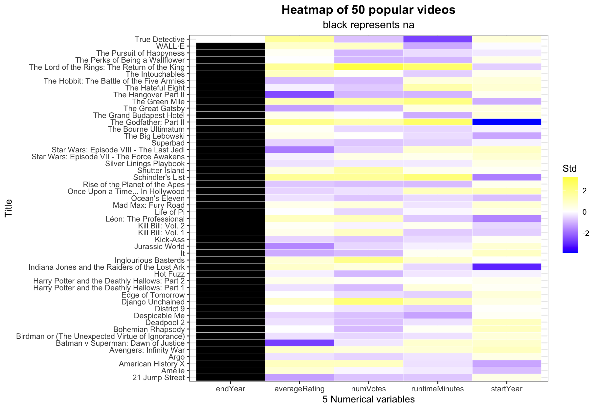

Chapter 5 Missing by rows
## The Lord of the Rings: The Return of the King
## 1
## Django Unchained
## 1
## Inglourious Basterds
## 1
## Schindler's List
## 1
## The Green Mile
## 1
## Shutter Island
## 1
## The Godfather: Part II
## 1
## Léon: The Professional
## 1
## American History X
## 1
## Kill Bill: Vol. 1
## 1
## WALL·E
## 1
## Avengers: Infinity War
## 1
## Mad Max: Fury Road
## 1
## Indiana Jones and the Raiders of the Lost Ark
## 1
## Star Wars: Episode VII - The Force Awakens
## 1
## Harry Potter and the Deathly Hallows: Part 2
## 1
## The Intouchables
## 1
## The Big Lebowski
## 1
## The Grand Budapest Hotel
## 1
## Amélie
## 1
## Kill Bill: Vol. 2
## 1
## Silver Linings Playbook
## 1
## Batman v Superman: Dawn of Justice
## 1
## District 9
## 1
## Once Upon a Time... In Hollywood
## 1
## Edge of Tomorrow
## 1
## The Bourne Ultimatum
## 1
## Jurassic World
## 1
## Birdman or (The Unexpected Virtue of Ignorance)
## 1
## Life of Pi
## 1
## Argo
## 1
## Star Wars: Episode VIII - The Last Jedi
## 1
## The Hateful Eight
## 1
## Superbad
## 1
## Ocean's Eleven
## 1
## Kick-Ass
## 1
## 21 Jump Street
## 1
## Deadpool 2
## 1
## Despicable Me
## 1
## Rise of the Planet of the Apes
## 1
## The Great Gatsby
## 1
## Harry Potter and the Deathly Hallows: Part 1
## 1
## It
## 1
## The Hobbit: The Battle of the Five Armies
## 1
## Bohemian Rhapsody
## 1
## Hot Fuzz
## 1
## The Perks of Being a Wallflower
## 1
## The Hangover Part II
## 1
## The Pursuit of Happyness
## 1
## True Detective
## 0 Observations:
Observations:
Nothing but endYear is missing frequently. We can infer that: 1. The most popular works have relatively complete information available to public 2. Movies are being voted much more than TV series, since only TV series has endYear as an attribute.
5.1 Heatmap


Observations: ggtile() may not work very well this time because most of the values in our dataset are discrete and non-numeric.

5.2 Missing by other attributes
We have already seen from missing by column that only four of the attributes have missing values. Therefore, it may not be meaningful to compare the missing values by year, rating, or votes, etc.